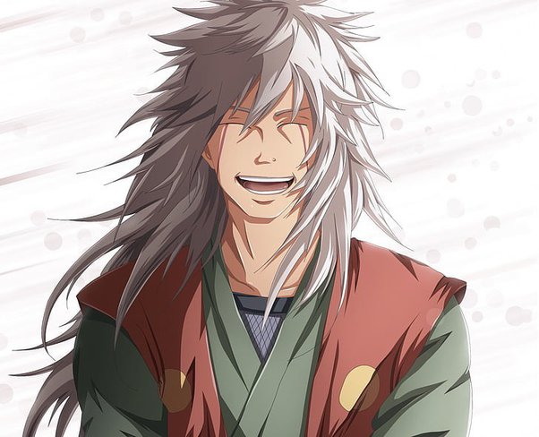

Jiraiya (自来也) was one of Konohagakure's Sannin. Famed as a hermit and pervert of stupendous ninja skill, Jiraiya travelled the world in search of knowledge that would help his friends, the various novels he wrote, and, posthumously, the world in its entirety – knowledge that would be passed on to his godson and final student, Naruto Uzumaki.
